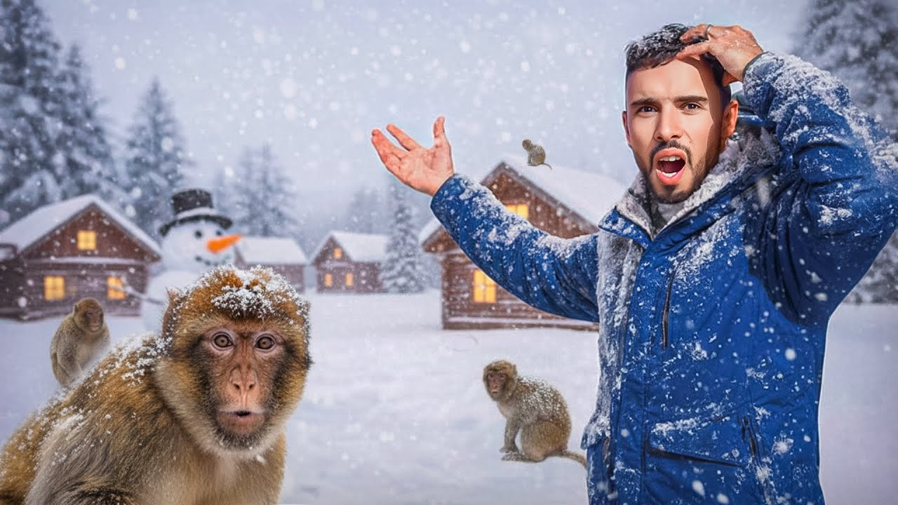
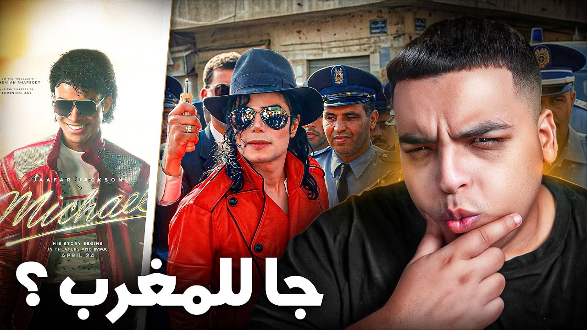

Mes Projets
Design Gaming : Création d'un univers dynamique avec des effets visuels percutants.
.jpg)
Conception visuelle pour Vlogs : Mise en avant de l'immersion et du storytelling.
Design de miniature YouTube optimisé pour le CTR

Composition graphique avancée : Maîtrise des contrastes et de la hiérarchie visuelle.
.jpg)
Design de miniature YouTube optimisé pour le CTR
.jpg)
Design de miniature YouTube optimisé pour le CTR
.jpg)
Design de miniature YouTube optimisé pour le CTR
.jpg)
Identité visuelle YouTube : Création de miniatures cohérentes avec le contenu vidéo.

Miniature de Réaction : Focus sur l'expressivité et la curiosité pour captiver l'audience.
Ma Formation
2025 - Présent
Licence en Informatique Appliquée - Université Ibn Tofail, Kénitra
2024 - 2025
Baccalauréat Sciences Physiques (BIOF)
À propos de moi
Mes Compétences
Informatique
Python, HTML5, CSS3, JavaScript
Design & Montage
Photoshop (Miniatures), Adobe Premiere Pro
Mon Portfolio
Contactez-moi
Besoin d'un design ou d'un montage ? Discutons-en !
Envoyer un Message